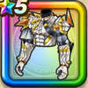

マスタードラゴンの鎧上
攻略班 8.0点 / メラ属性耐性+5%ミルドラースへの耐性+10%イオ属性耐性+5%イオ属性耐性+5%ドルマ属性耐性+5%【晴れ】バギ属性斬撃・体技ダメージ+3％【パラディン】スキルの斬撃ダメージ+2%【海賊】スキルの斬撃ダメージ+2%バギ属性斬撃・体技ダメージ+6%
くわしい特徴
【レベル別習得スキル】 Lv1メラ属性耐性+5% Lv5ミルドラースへの耐性+10% Lv8イオ属性耐性+5% Lv10【晴れ】バギ属性斬撃・体技ダメージ+3％ Lv12【パラディン】スキルの斬撃ダメージ+2% Lv12【海賊】スキルの斬撃ダメージ+2% Lv12バギ属性斬撃・体技ダメージ+6% Lv15イオ属性耐性+5% Lv18ドルマ属性耐性+5% Lv20守備力+7 Lv23きようさ+10 Lv25さいだいMP+9 【限界突破スキル】 1凸攻撃力+7 2凸すばやさ+10 3凸守備力+5 4凸さいだいHP+10